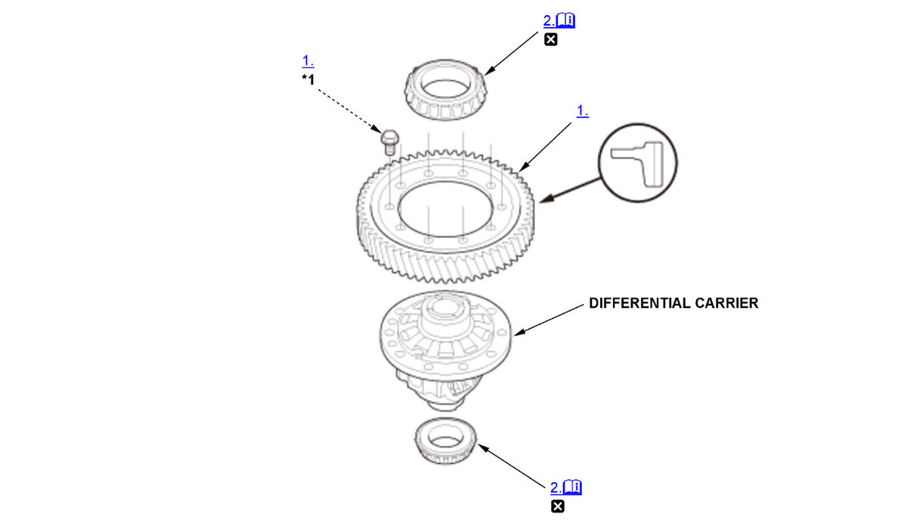

CVT Differential Carrier Disassembly and Reassembly (L15B7/L15BA/L15BY (CVT)): Disassembly: Procedure
NOTE:
Numbered call-outs in figure pertain to list numbers in following procedure.
Fig 1: Exploded View Of CVT Differential Carrier Components For Disassembly (L15B7/L15BA/L15BY - CVT)

Courtesy of HONDA, U.S.A., INC. |
Detailed information, notes and precautions |
 |
Replace |
| *1 | Left-hand threads |
- Final Driven Gear - Remove
- Differential Carrier Tapered Roller Bearing - Remove
1. Set a commercially available bearing puller (A) under the differential carrier tapered roller bearings (B) as shown. 2. Remove the bearings using the commercially available bearing puller and a commercially available spacer (C).